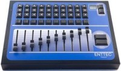

Table of Contents

FreeStyler Version History
This page provides an explanation of the new features, beyond the basic release notes provided with the update.
This is the what's new page for versions of FreeStyler (2.95h to 4.3.8, then 3.54 on).
Changelog for reported bugs and feature requests in the Freestyler Bug Tracker
Version 3.6.49
New features:
- Added the ability to activate a submaster during FS launch
Improvements:
- Made some improvements when adding fixtures.
- Added shortcuts to print fixture list and clean sequences from the add/remove fixture window
- Click on “Offline mode” in the create sequence window to go to online mode
bug fixes:
- Fixed fatal crash when saving an empty cuelist with the cuelist editor
- Bug fixed in the sequence cleanup fixtures
Version 3.6.48
bug fixes:
- Fast cue switcher didn't refresh cuelist contents
- Unable to set react to sound in the edit cuelist window
- Submaster list midi change
Version 3.6.47
New features:
- Added the Eurolite USB-DMX512 Pro Cable-Interface
Improvements:
- Changing an override value without running cues/cuelists no longer changes the base value of that channel
- (if you released that override the value remained the same giving the impression the override was still active)
- Added an option to the override buttons preventing FS stopping overwritten buttons, all buttons will remain running until manually stopped.
bug fixes:
- Fixtures with just a tilt channel did not fade
Version 3.6.46
bug fixes:
- Font colors mismatch
- Submaster not updating all parameters on the cuelist window
- Sequence name not always visible in create chase window
- FixtureCreator: Error loop when “open” is pressed without fixture selected
- TouchUI: override status of specific channels were not updated
- TouchUI: Custom override buttons are expanded to 192
Version 3.6.45
New features:
- Receive network commands from two sources
bug fixes:
- Crash during load
Version 3.6.44
New features:
- First implementation of sACN E1.31 support
bug fixes:
- Subscript out of range error in cuelists
- Fixed error during load
Version 3.6.43
Improvements:
- Sequences per submaster increased to 60
- Added fixtures should load on top now
bug fixes:
- Wrong MIDI device loaded and started
- Submaster RUN midi shortcut was always in flash mode
- Art-Net bugs fixed
Version 3.6.42
New features:
- DmxSoft interfaces added
Version 3.6.41
Improvements:
- Dark theme improved
- Rescan button for MIDI devices
- Added option to start Sound2Light on startup
- A lot of small improvements
bug fixes:
- Smoke window not loading settings
- Fog not toggling when continuous fogging is activated
- Disabled icons remained visible when changing zones
- Gobo rotation fader not always working
Version 3.6.40
ATTENTION !
- Following interfaces were removed (old LPT interfaces using DLPORTIO.SYS): AVR DMX, Kristof Nys 64, LPR2DMX, Oksid DMX, Parzic
Improvements:
- Installer removes all FreeStyler settings from the register when “Reset all settings to default” has been checked
- Installer asks always for the install directory
bug fixes:
- FreeStyler crashes when used on another OS than Windows 10
Version 3.6.39
New Features
- Added a dark theme, a reboot is required to apply (beta)
- Submaster: FLASH and FLASH-out to first sequence in the list
Version 3.6.38
Improvements:
- Improved override buttons click response
- Submasters: global RUN button
- Override buttons visible on all pages are now highlighted
- Submaster sequence will load following settings: loop, random, reverse, sound, tap and fade
New Features
- Distribute fixtures evenly over a shape
- Shape offset for each fixture
bug fixes:
- Show only 3 rows in override buttons fixed in alternative views: renamed to Hide the bottom row of buttons
- Double click on an override button disabled other buttons
- Custom sliders can cause a crash if min and max are the same
- Preset window not always visible when create sequence window is opened
- Override buttons visible on each page were not always visible
Version 3.6.37
Improvements:
- Master intensity also applied in override buttons
New Features
- Override buttons are sizable.
bug fixes:
- Apply to all steps with an applied preset blocked all channels
- Save to current cuelist checkbox was always visible and wrong color
- Transitions between shapes in cuelists was not smooth
Version 3.6.36
Improvements:
New Features
- Combine multiple cuelists (empty slots are not overwritten)
- Disable other cuelists option per cuelist
- Number of cuelists has been increased to 32 per page (only in alternative view)
- Edit cuelists in a separate window leaving the current cue untouched (right click on a cuelist or submaster)
- Move sequences in cue by drag and drop (on empty slot)
bug fixes:
- Global colors not always showing
- Critical bug fixed in FX generator
- Critical bug fixed in fixture creator which generated a corrupt profile
- Critical bug fixed in submasters when “Remove sequence from cuelist” is pressed
- Live shape speed changed when editing sequences in offline mode
Version 3.6.35
Improvements:
- Gobo rotation control received a min and a max value
- Warning when “Rearrange all” pressed
- Several small improvements
New Features
- Option to delete all previous chases, cues and shapes before restoring a backup
bug fixes:
- Submaster intensity changes when started.
- Several small bug fixes
Version 3.6.34
Improvements:
- Fog control is no longer send out in override values
- Override notification now only reflects a manual override, no longer active override buttons
New Features
- Auto save changes to cuelist when cuelist stops
- Submaster slider can be used to control sequence speed
- Save the combination of running submasters to a cuelist
- Edit sequence from submaster list
- Create sequence window: reload sequence button
bug fixes:
- Rename folder issue when folder already exists
- Sometimes a backup file doesn't restore
- Fixture pictures were not included in a backup file
- Dimmer channel in some cases didn't use Min and max values
- Reset fixture can, in some cases, get stuck in a loop
- Annoying bug fixed when editing a sequence offline
Version 3.6.33
Improvements:
- Speed improvements
Version 3.6.32
New Features
- New interface added: Eurolite freeDMX AP
- Group window received an alternative layout (press button left of the close button to enable it)
- Cue window received an alternative layout (press button left of the lock button to enable it)
Improvements:
- New backup files include registry settings
- Some small speed improvements
- The old and abandonned touch UI 1 has been removed and replaced
- Save submaster levels on exit
- Improved the fixture bar left on the mainscreen (up to 8 per page, labels,…)
- Locate fixture: changed behaviour
bug fixes:
- Critical bug fixed in Override buttons
- MIDI feedback when using MIDI pages
- Shapes bug fixed when using cascading shapes
- Override bug fixed
Version 3.6.31
Improvements:
- Ability to change shape speed in offline mode
bug fixes:
- Critical bug fixed in Cuelists
Version 3.6.3
New Features
- Mirror universe 1 to universe 2 option
- Ability to rearrange cuelists and override buttons by drag & drop
- Move groups up & down
- Alter MIDI feedback value for on/off (multicolor controllers)
- Two midi controllers can be used
Improvements:
- Ability to change shape speed in offline mode
- Autosave location on exit
bug fixes:
- Location disappeared from window caption after restart
- Touch UI2: override button captions disappear when using custom text
Version 3.6.2
New Features
- Drag & drop cues directly onto the cuelist
Improvements:
- S2L blackout individual fixtures with configurable interval.
- S2L icon: changed color
bug fixes:
- Blackout for segment fixtures
- MIDIcon sometimes fails to work
Version 3.6.1
bug fixes:
- Fixture macros fixed
- Submaster not saving lists fixed
Version 3.6.0
New Features
- Drag & drop sequences directly onto the submasters
- Open window: button to switch between cues and sequences
- Custom sliders: used when a fixtures has several functions on one channel, to be configured for each fixture with FixtureCreator
Improvements:
- Added “Edit fixture” and “Reload fixture” option when right click on fixture.
bug fixes:
- Easy 3D fixed, do not forget to configure Universes patch
Version 3.5.9
New Features
- New MIDI shortcuts: remove from playback, Pause S2L, Disable fixture
- Option to switch sequences back to auto when S2L is paused
- Basic countdown added in Suntrix (midnight is 23:59:59 !!!!), preset “F1” is executed after countdown.
Improvements:
- Offline mode goes off automatically
- Custom touch captions are updated when control is cleared or added
bug fixes:
- DMX400 critical bug fixed when decreasing total channels
- Fixture status images not updated
- Suntrix and ledtrix data is now included into the backup file
Version 3.5.8
bug fixes:
- TabTip.exe bug fixed
Version 3.5.7
New Features
- ELC Buddy interface added
Improvements:
- Disable previous cuelist option
- ArtNet ported to .NET (.NET 3.5 required)
- MADRIX DLL version fixed
bug fixes:
- Small bug fixes
Version 3.5.6
New Features
EUROLITE freeDMX interface added Save custom RGB palet colors Touchscreen can be made windowed Overridebuttons fading (experimental) Loaded location visible in the title bar Overridebuttons fade-in Improvements:
Small improvements
Touchscreen can be set in windowed mode Link touch to midi page DMXKing UltraDMX pro uses the FTDI driver (no VCP anymore = faster & more stable) Combine several fx into one sequence
bug fixes:
MIDI configuration unusable if “Note-on Note-off” option set after configuration. Small bug fixes
Version 3.5.5
Released 31/10/2013
New Features
- All 96 cuelists can be placed on the touchscreen
Improvements:
- Small improvements
- Improved the Tap Sync LED - the blue light now flashes in time with the tempo like most normal metronome lights.
- Sequence and fade timing
Bugs fixes:
- MIDI feedback fixed - this was not properly providing 'feedback' to update MIDI controllers (e.g. the motorized faders on devices like the BCF2000)
- MIDI pages fixed - previously, pages (and shift) would not provide correct MIDI feedback
- MIDI note-on/note-off fixed
- Monacor 510 fixed
- Fixture Creator fixed
- Restore intensity channels now restores the intensity channel and no longer shutter channel
Version 3.5.4
Released 10/07/2013
New Features
- Selectable submaster layouts - You can now choose to display 5, 10 or 20 submasters with lists, or 20 submaster faders (no lists). Accessible from the settings cog in the submaster window.
- Submasterlists MIDI control - This lets you assign a fader or rotary control (not button) so you can scroll up or down through your submaster list with the control.
- Submaster toggle 1-20 MIDI control - These toggle the run/stop state of a given submaster.
- Open submasters on start option - Edit this setting under Setup > FreeStyler Setup > Preferences > Extra Options and tick “Open cue and submaster at startup”
- WW, CW and amber visualisation - This is like the color bar you get in the FreeStyler interface for RGB fixtures, now for these kinds of fixtures.
- extra TCP/IP commands
- Ability to show an override button on each page (button is accessible on each override button page) - Press the right mouse button on an override button and you can enable this feature (“Show on all pages”), and the button will be duplicated in the same spot on all button pages.
- Added extra touch buttons
- Ability to save directly to a cuelist - When you create a sequence and save it, you now get 2 new drop-down options. Now you can create cues without the cue window, and you can add a new sequence directly to an existing cue.
- RGB channels are by default in LTP mode (submasters), can be set in HTP if needed
Improvements:
- Ability to use the submasters with the cuelists
- TCP/IP remote control reconnection after 15sec. after disconnection
- Uninstalling FreeStyler will remove all registry settings and FreeStyler directory.
- Several small improvements
- Sequences have priority over DMX400
Bug fixes:
- Bug fixed in backup/restore
- Art-Net fixed
- Joystick > 16 buttons
- Several small bug fixes
- Bug fixed in sequence cleaner
- DMX400 several bugs fixed and improvements
… This page was not maintained for a couple of years (11/03/2013), so versions 3.4.8 to 3.5.3 are not shown here…
Version 3.4.8
New Features
Added M-LED FreeDMX-512 Interface DMX400: manually select color per channel (right click on the channel's flash button)
Improvements:
DMX400: increased the min. fade speed. MIDI & UDP: added a lot of extra commands MIDI & UDP: list order changed, functions are more grouped. MIDI & UDP: up to 24 groups can be controlled (previously up to 10) MIDI to touchscreen Ui2feedback improved. Artnet broadcast address can be customized and IP restrictions removed Restore previous value in cue & cue list: "all channels" or "only intensity channels" options A lot of minor improvements
Bugs fixes:
Fixturecreator: bug fixed in export when profile has been saved elsewhere. Fixturecreator: several small issues fixed A lot of minor bug fixes
Version 3.4.7
New Features
Rename groups
Improvements:
Decreased MIDI feedback messages Group number is visible. Pan/tilt 16bit in FX generator
Bugs fixes:
Restoring a backup file didn't restore sub folders. Eurolite DMX interface not saved Joystick control not working Pan arrow activates Tilt channel
Version 3.4.6
New Features
Added MADRIX interfaces Added UltraDMXPRO interface
Improvements:
Tap sync: time between the last two taps is applied. (based on other DMX controllers) A tap enabled sequence (cue) will run at the tap speed when started
Bugs fixes:
Open saved config in touch UI2 (ticket 0000301) Touchscreen 2: start / stop sequence 1 -20 (ticket 0000308) Touchscreen 2: shutter open/close issue (ticket 000310) Touchscreen 2: command run issue (ticket 0000331) Installer fixed (some files were not copied preventing FS to load) Changing speed of a non-tap sequence stops the tap sync Shape stops when override button is applied Shape goes to home position when submaster starts GUS interface fix MIDI - touch updates
Version 3.4.4
Improvements:
ARTNET output on change and broadcast address changed to x.x.x.255 DMX4ALL 3rd generation improved
Bugs fixes:
Several important bug fixes
Version 3.4.3
Improvements:
Ability to add subfolders
Bugs fixes:
Some global colors issues fixed Several minor bug fixes
Version 3.4.2
New Features
Touchscreen UI2 Pan/tilt control Touchscreen open/save Global colors !!!: Make sure the fixture colors in the profile are correctly identified, enable Global colors in Freestler: "EDIT" -> "USE GLOBAL COLORS", there's also an option to show only the shared colors between selected fixtures.
Improvements:
Enhanced security option: Disable save on exit Other small improvements
Bugs fixes:
Several minor bug fixes
Version 3.4.1
New Features
Improvements:
Touchscreen UI1 Colorpicker will react on mousemove Macro window received same width as gobo & color window Enhanced security options
Bugs fixes:
Blackout amber & white channels Touchscreen UI1 override button status
Version 3.4
New Features
Removed 33 channel limit Added support for RGB segments (checkout Showtec Pixeltrack PRO (160ch)) Added Amber channel and two white channels for RGB fixtures (currently not for segments)
Improvements:
Improved FixtureCreator Single play sequence stops at the end. Small improvements
Bugs fixes:
> 6 tabs issue Mousepad position update
Version 3.3.9 Beta
New Features:
- None
Improvements:
- Suntrix/Ledtrix improvements
- Small improvements
Bugs fixes: Changelog
- Unordered List ItemSuntrix/Ledtrix address error
- Suntrix save data error
- Cue reverse - single play problem
- Touchscreen II fixes
- Small bug fixes
Version 3.3.8 Beta
New Features:
- Touchscreen2 pages: up to 6 pages
Improvements:
- Touchscreen2 encoders are replaced by sliders
- Ability to leave speed “as is” for each submaster
- FixtureCreator is resizeable and improved
- Small improvements
Bugs fixes: Changelog
- Manual trigger and loop all sequences fixed
- FixtureCreator display macros fixed
- Open/save window create directory fixed
- Clear cuelist fixed
- MIDI bugs fixed
- Small bug fixes
Version 3.3.7 Beta
New Features
- EUROLITE USB-DMX512 Pro
Improvements:
- Small improvements
Bugs fixes: Changelog
- Small bug fixes
Version 3.3.6 Beta
New Features:
Improvements:
- “Disable buttons” didn't update intensity labels
Bugs fixes: Changelog
- Dimmer levels were limited to 20-200
- Pan/tilt correction bug
- Submaster MIDI control bug
- Touch2 MIDI to DMX bug fixed
- Double click bug fixed in submasters
Version 3.3.5 Beta
New Features:
- Shortcuts for quicksave and save in cue window
- Shortcuts for open in cuelist, submaster and override buttons
Improvements:
- “Load cuelist only” option
- FreeStyler accepts MIDI from different channels now
- New uDMX dll with improved performance
- When disabled the cuelists will blackout the fixtures (no longer all channels to 0)
Bugs fixes: Changelog
- Right click bug fixed in override buttons
- Bug fixed in FixtureCreator (ranges turning red)
- “Disable Buttons” does not update override status fixed
Version 3.3.2
New Features:
- Submaster fader start/stop control
- Override buttons: only selected fixtures option
- Submaster groups: 1 SM controls all other SM group members (right click on a submaster to set membership)
- Individual Submaster control: Midi, keyboard
- Start Presets from override buttons (Drag & drop from presets to buttons, selected fixtures only)
- Lock DMX output (find it in the new “Output” menu)
- TCP/IP ASCII protocol (use the iPhone TCP/IP app directly without an external server application)
- Generate random values (per fixture or by group): Gobo1, Color1, Iris, Dimmer, Strobe, RGB, Pan/Tilt
Improvements:
- MIDI options
- Touchscreen - MIDI update improved performance
- DMX4ALL 3rd. generation interface
- Art-Net to DMX updated
Bugs fixes:
- Bug fixed in submaster: dimmerpacks not responding
- MIDI: controlchange 0 not received
- LedTrix & SunTrix addressing error
- Freeze priority
Version 3.3.1
New Features:
Improvements:
Bugs fixes:
- Small fixes
Version 3.3.0
New Features:
Improvements:
- Supports higher DPI
Bugs fixes:
- Bug fixed in Ledtrix & Suntrix
Version 3.2.9
New Features:
Improvements:
- improved Sound2light random mode: RGB and selection modes
- Redesigned master control
Bugs fixes:
- Minor fixes
Version 3.2.8
New Features:
Improvements:
Bugs fixes:
- Bug fixed in “Show all windows”
- Bug fixed when fades are disabled: master intensity was ignored
Version 3.2.7
New Features:
Improvements:
- Clicking a second time on a toolbar icon closes the window.
Bugs fixes:
- Bug fixed in submaster: 20st sequence in list not played
Version 3.2.6
New Features
- Added Eurolite USB-DMX interface
Improvements:
Bugs fixes:
Version 3.2.5
New Features
- Added MegaDMX interface
Improvements:
Bugs fixes:
- Bug fixed in sendmessage
- Bug fixed in toggle joystick keyboard shortcut
- Bug fixed in override buttons: “Subscript out of range” after new page creation
Version 3.2.4
New Features
Improvements:
Bugs fixes:
- Bugs fixed in sequence cleaner
- Bug fixed when Color2 images were empty
- Midi to DMX: fixed update
Version 3.2.3
(released 9-11-2009)
New Features
- Sequence cleaner: removes unconfigured channels and selected fixtures from sequences
(add/remove fixtures window → options → Cleanup sequences)
Improvements:
- Made a change when adding fixtures: auto start address can be altered.
Bugs fixes:
- Bug fixed in Suntrix and Ledtrix (if channels > 512)
- Bug fixed in MIDI (during first start)
- Bug fixed in commandline
- Bug fixed in realtime timecode (12 hour/24 format)
Version 3.2.2
(released 30-10-2009)
New Features
Improvements:
Bugs fixes:
- Bug fixed in startup values
- Bug fixed in FixtureCreator
- Bug fixed in commandline
Version 3.2.1
(released 22-10-2009)
New Features
- FixtureCreator: auto generate DMX values for gobo and color channels.
Improvements:==== * Sound2Light received a BPM counter Bugs fixes:====
- Bug fixed in submaster: when gap in the cuelist
- Bug fixed in zones not showing after restart
- Bug fixed in Suntrix and Ledtrix: backspace issue
- Bug fixed in keyboard shortcuts: macros (functions with the same shortcut are triggered at the same time)
Version 3.2
(released 16-10-2009)
New Features
- Master intensity: Virtual dimmer for LED fixtures without intensity channel.
- Ability to add a background to the touch interface n°_2: just place a background.bmp in the following directory: images\touch\
- Extra info about fixture profiles visible
- Next/previous color compatible with led fixtures
- Default values for fixtures added
- Selection order in Fanning added
- Added midi and keyboard function: “Disable tap/manual trigger”
- New sound to light module !!! (Thanks to Remco, check out his website for updates http://www.digiplay.nl/fs/)
- Search function in fixture list
- Disable/enable tap sync/manual trigger per sequence
- Disable/enable all fades in a sequence
- Added support for Enttec wings

- Added “Flip” function for moving heads (pan/tilt ranges can be configured with the Fixturecreator)
- Output refresh rate can be changed
- Lowest and highest limit can be set (right click on a slider at the right)
- Added two plugins: Suntrix and Ledtrix
- Several enhancements
Improvements:==== * Some speed improvements in the override buttons * Change made in the behaviour of the Tap sync: first and second tap will trigger the sequences. * Added print function to print a list of you fixtures * Output view will show channels with settings on a red background, at the bottom you can read the actif settings for that channel. * Extra control added to the touch interface n°_2: Encoder wheel. (automatically selected depending on function) * Security added to touch interface n°_2 * Some small enhancements in the Enttec wing code * Changed FixtureCreator open dialog * Tweaked Fade Timer * FX engine: shutter chase compatible with led fixtures (intensity channel must be configured) * FX engine: color chase compatible with led fixtures. * MIDI notes editable without connected controller * Added dialog when exiting sequence creator “save first?” * FX are applied to fixtures in selection order * MIDI “control change” message fix (BCF2000,…) * FX window made smaller * Realtime mode (scheduler) starts when FreeStyler starts (if configured) * New commandline added (compatible with Enttec program wing) * Create sequence: initial values change * Fades are automatically disabled at high speeds * Refresh fixture list button * Added some extra keyboard and midi functions * Changed the way sequences can be made during a show, 3D viewer shows the created sequence. * Process has now high priority * Extra FX were added * Velleman interface output tweaked * Touchscreens are from now on always on top Bugs fixes:====
- Bug fixed in override buttons: shapes got disabled when a second button was enabled
- Bug fixed in cue: Shapes didn't work LTP
- Bug fixed in override buttons: transparency worked in the wrong order
- Some more small bug fixes and improvements in the cue
- Bug fixed in create sequence window: preset fade channels were not played
- Bug fixed in preset editing
- Bug fixed in pan/tilt keyboard shortcuts
- Bug fixed (if a fixture name was altered and ENTER was pressed FS became corrupt)
- Bug fixed in DMX400 if master intensity was less than background intensity.
- Bug fixed in master intensity when intensity and shutter channel are shared
- Bug fixed in cue (tilt channel of the latest fixture not working in some cases)
- Some bugs fixed when creating a sequence
- Intensity label bug fixed
- Bug fixed: FS crashes if the interface wasn't connected
- Ignore master intensity bug fixed
- Default installation folder has been changed to c:\freestyler (issues with Vista and Windows 7)
- Bug fixed in macro window
- Issue with Submasters and manual trigger / tap sync fixed
- Some bugs in the FX window
- Bug fixed in cue (tap state not saved correctly)
- Create directory issue fixed
- Preset values not changed when edited or applied fixed
- Some fixes for netbook use
- Bugs fixed in Enttec Wing system
- Compact view bug fixed
- Fixed 100% CPU at first run
- Bug fixed in shape system
- Bug fixed in cuelist and override buttons (captions on buttons not changing)
- Bug fixed in “Loop all sequences”
- Bug fixed in MIDI override buttons: Flash buttons sometimes got stuck
- Bug fixed in touchscreen (cuelist and override tabs)
- Bug fixed in external control system: if a fader was touched without a fixture been selected FS crashes.
- Option added to increase process priority (previously on some systems FS didn't start the first time)
3.0.1
- Sound to light fixed
- Groups updated when fixture is removed
- A part of the freestyler.ini file is saved in the registry
- DMX400 fixture mappings are now saved in the location file, no longer in the ini file
- Minor DMX400 improvements
- Some other minor improvements
- Bug fixed in presets
- Bug fixed in preset backup
3.0
New functions:==== * Some UI changes (new icons, colors) * Added a new touchscreen UI * Added new password security * Added a simple sequence generator * Added “Ignore blackout” function * Added “quick save” for saving sequences * Added “disable all other buttons” in override buttons * Clone fixture function added * Up to 12 fixtures can be controlled by the DMX400 * Disable/enable fixture (no values are send to that fixture) * Disable/enable playback fixture (no playback values are send to that fixture) * Added select next, previous, even and odd fixtures (keyboard and midi shortcuts) * Added LOCATE function to locate fixtures (you can configure custom values in the profile) * Icon added on fixture when override active * Indication during sequence creation if a fixture is active in a sequence (yellow= active, red= active with preset values) * Added some new programs to the DMX400 * Added play cuelist buttons: save a cuelist and play that cuelist with one button ! * Added option to reset windows positions * 16bit pan & tilt * Added 60 presets * Import/Export sequences and cues for uploading to a Martin 2510 controller (Martin “Download to 2510” tool needs to be installed) Bugs fixed:====
- Some minor fixes in midi system
- Bug fixed in create sequence
- Bug fixed in next/prev colors/gobos
- update active icon after disable all override buttons in cue
- Bug fixed in relative movement
- Bug fixed in master control
- Bug fixed in realtime timecode
- Bug fixed in rename sequence / cue
- Bug fixed in saving cue (wrong filename)
- Bug fixed in cuelist priorities
- Bug fixed in snap/fade/off
- Bug fixed in fast cue switcher
- Bug fixed: restore values not working in cuelist buttons
- Bug fixed when selecting fixtures
- Bug fixed in palettes/presets
- Fixed xp style
- Bug fixed in open window
- Removed messageboxes which could pause the program
- Bug fixed: Override can't be altered after a sequence
- Bug fixed: Delete step in sequence creator
- Override buttons fixed in touchscreen
- Bug fixed with midi and mouse cursor
- Bug fixed in color slider
- Release override in all windows fixed
- Pan & tilt up/down buttons bug fixed (changes both channels)
- Sequence name in cue fixed when added with save dialog
- Bug fixed “add to cue” always inserts on row 1
- Bug fixed in Mousepad
- Bug fixed in mousepad: ball not moving like it should when pan or tilt locked
- Bug fixed in snap/fade/off
- Windows 2000 fix
**Enhancements:====
- Changed Freeze and blackout behaviour
- DMX400 settings are saved
- Some improvements in the DMX400
- previous location files and backups are refused (most beta problems were caused by old files)
- Removed Winamp synchronization because of limitations
- Sequences are no longer compatible, but can be converted by opening and saving them in the sequence editor.
- General enhancements
2.96j beta
- Fixed Easylase interface
- Added extra RGB/CMY color palette
- Bug fixed in sequence creator (deleting a scene sometimes gives a “subscript out of range” error
- Bug fixed in cue (deleted cues are removed)
- Bug fixed when deleting files
- Files not found are removed from cue and buttons
- Bug fixed in “Add to cue” and “Add to buttons”
2.96i beta
- Bug fixed in Master intensity
- Bug fixed in override buttons(sometimes a button became blocked)
- Disable all override buttons function
- “Disable all buttons” + “release all” setting for each seq. in cue
- Bug fixed in touchscreen (wrong or no images shown)
- Edit override button shortcut
- Improved right click on fixture
- Touchscreen update images when fixture clicked
- Tooltips in cue
- New beta touchscreen GUI
- Small bug fixed in cue
- Small bug fixed in Fixturecreator
- Minor improvements
- Added Fog and Fan minimum and maximum values
- Made some changes to the fog window
- Easy 3D fixed
- LEE filter conversion in CMY/RGB window
2.96h beta
- Bug fixed “add to buttons”
- FS version in about window
- Added Midi shift button
- Bug fixed in Midi(cue speed control not updating)
- Bug fixed in intensity
- Added in cue an option for releasing override before starting a sequence.
- Added an option for always returning to previous values
- Added an extra color palette in color window (RGB/CMY)
- Cue, fog, sound2light and submaster are “always on top” when locked
- When sequences are deleted, cue and override buttons are updated
- Some minor improvements
2.96g beta
- Bug fixed in Override buttons
- Added keyboard shortcuts for changing override pages
- Some bugs fixed in Midi system
- Some minor improvements
2.96f beta
- LPT bug fixed in cue
- Some minor improvements
2.96e beta
- Bug fixed in FixtureCreator (applying images) and saving
- Bug fixed in Submaster (intensity on “fade” channels not altered in realtime)
- Some minor improvements
2.96d beta
- Bug fixed when restoring Cue and submaster settings
- Bug fixed in DMX400 using fade
- Made some changes in the Espion II code
- Changed DMX400 color rendering system
- Added disable overrides for groups
2.96c beta
- Bug fixed in Sound2light when joystick is enabled
- Some changes made in Peperoni interfaces (RodinX)
- Bug fixed in initial loop mode
- Bug fixed: “Back” button in submaster
- Right click on “Tap” disables tap sync
- Bug fixed in FixtureCreator and added some enhancements
- Added uDMX interface
2.96b beta
- Bug fixed in Cue switcher
- Bug fixed in submaster: speed went to 10%, subscript out of range error,…
- Bug fixed in Masterspeed
2.96a beta
- Bug fixed in Cue switcher
- Bug fixed in cue: Clear list
- Bug fixed in Sound2light: fadetime
- Midi sequence speed changed (fast sequences stopped while changing speed)
2.96 beta
- Override bug fixed when using sound to light with random values
- More programmable override buttons (each page can hold 30 buttons, max 6×30 buttons = 180 buttons!!
- Added option for transparent windows (w2k and xp only)
- Improved backup/restore
- Rewritten some parts of the Cue
- Midi velocity is changed to greater than value
- Bug fixed in Bezier speed control (when changing cue speed)
- Bug fixed in DMX400 (only 4 channels were available)
- Bug fixed with zoomchannel not stored in a sequence
- Bug fixed with iris, zoom, prism,… not updating during sequence creation.
- Added Reve Productions interface
- Minor tweaks
2.95h beta
- Midi tap sync status
- Midi “Release override settings for selected fixtures” shortcut
- Added RGB functionality to the DMX400
- Made the Sound to light a separate program
- Removed the startchannel setting in the DMX400 and replaced it with a right click menu for each fixture
- Added a min. and max. value for the intensity and strobe channel.
- RGB/CMY visualization
- Added the JMS USB2DMX interface
- Added Afterglow interface
- Added the Stageline DMX510 interface
- Added Espion II interface
- Bug fixed in color window
- Bug fixed when dragging Bezier shapes